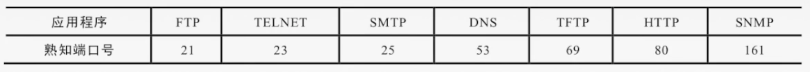
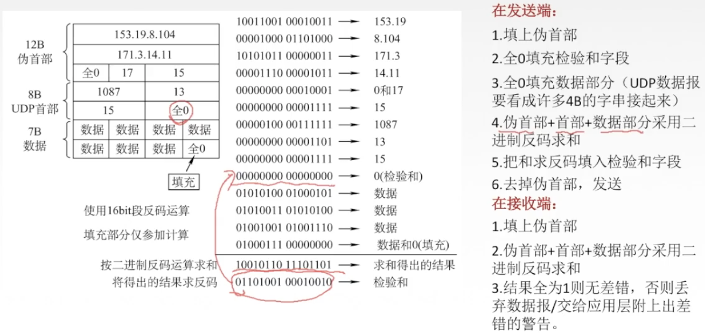
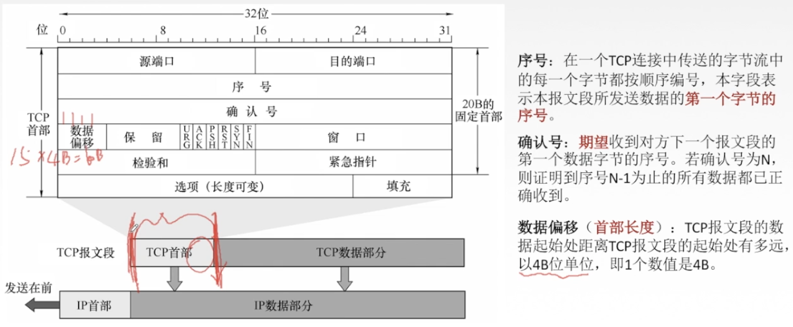
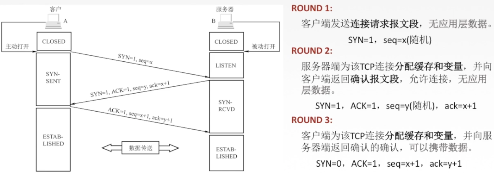
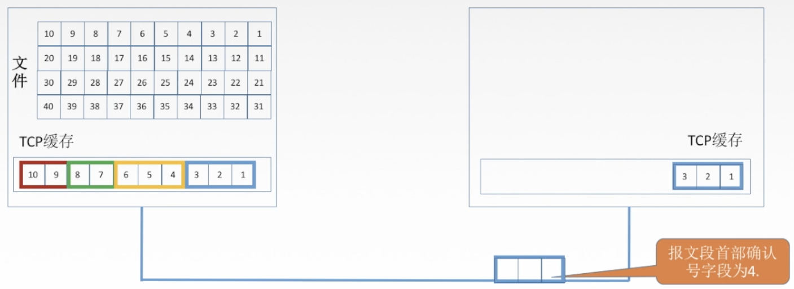
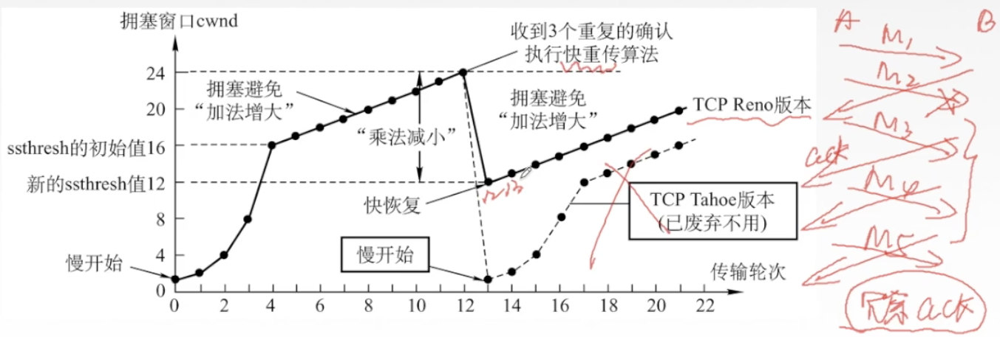

1 概述
传输层是只有主机才有的层次。功能有：
- 提供进程与进程之间的逻辑通信。（网络层提供主机与主机之间的逻辑通信）
- 复用和分用。
- 对收到的报文进行差错检测。
传输层的两个协议：
- 面向连接的传输控制协议TCP：可靠，面向连接，时延大，适用于大文件。
- 无连接的用户数据报协议UDP：不可靠，无连接，时延小，适用于小文件。
传输层的寻址与端口：
- 复用：应用层所有的应用进程都可以通过传输层再传输到网络层。
- 分用：传输层从网络层收到数据后交付指明的应用进程。
端口：逻辑端口/软件端口。传输层的SAP，标识主机中的应用进程。
- 端口号只有本地意义，在因特网中不同计算机的端口是没有联系的。
- 端口号长度为16bit，能表示65536个不同的端口号。
端口号按范围划分：
- 服务端使用：
- 熟知端口号：0～1023，给TCP/IP最重要的一些应用程序，所有用户都知道。
- 登记端口号：1024～49151，为没有熟知端口号的应用程序使用。
- 客户端使用：49152～65535，仅在客户进程运行时在动态选择。

2 UDP协议
UDP只在IP数据报服务之上增加了很少功能，即复用分用和差错检测功能。
UDP的主要特点：
- UDP是无连接的，减少开销和发送数据之前的时延。
- UDP使用最大努力交付，即不保证可靠交付。
- UDP是面向报文的，适合一次性传输少量数据的网络应用。（应用层给UDP多长的报文，UDP就照样发送，即一次发送一个完整的报文）
- UDP无拥塞控制，适合很多实时应用。
- UDP的首部8B，开销小。（TCP 20B）
UDP首部格式：

UDP校验：


3 TCP协议
3.1 特点和首部格式
TCP协议的特点：
- TCP是面向连接（虚连接）的传输层协议。
- 每一条TCP连接只能有两个端点，每一条TCP连接只能说点对点的。
- TCP提供可靠交付的服务，无差错、不丢失、不重复、按序到达。
- TCP提供全双工通信：
- 发送缓存：准备发送的数据，已发送但尚未收到确认的数据。
- 接受缓存：按序到达但尚未被接收应用程序读取的数据，不按序到达的数据。
- TCP面向字节流：TCP把应用程序交下来的数据看成仅仅是一连串的无结果的字节流。
TCP报文段首部格式：



3.2 TCP连接管理
TCP连接管理：
- TCP连接传输三个阶段：连接建立，数据传送，连接释放。
- TCP连接的建立采用客户服务器方式，主动发起连接建立的应用进程叫客户，被动等待连接建立的应用进程叫服务器。
TCP的连接建立：

TCP的连接释放：

3.3 TCP可靠传输
可靠传输：保证接收方进程从缓存区读书的字节流与发送方发出的字节流是完全一样的。
TCP实现可靠传输机制：
- 校验：与UDP校验一样，增加伪首部。
- 序号
- 确认
- 重传
序号：

确认：


重传：确认重传不分家，TCP的发送方在规定的时间（重传时间）内没有收到确认就要重传已发送的报文段。（超时重传）
TCP采用自适应算法，动态改变重传时间RTTs（加权平均往返时间）。

3.4 TCP流量控制
流量控制：让发送方慢点，要让接收方来得及接收。
TCP利用滑动窗口机制实现流量控制。
在通信过程中，接收方根据自己接收缓存的大小，动态地调整发送方的发送窗口大小，即接受窗口rwnd（接收方设置确认报文段的窗口字段来将rwnd通知给发送方）。发送方的发送窗口取接收窗口rwnd和拥塞窗口cwnd的最小值。

3.5 拥塞控制
出现拥塞的条件：对资源需求的总和 > 可用资源
网络中有很多资源同时呈现供应不足 -> 网络性能变坏 -> 网络吞吐量将随输入负荷增大而下降
拥塞控制：防止过多的数据注入到网络中。（全局性控制）
拥塞控制的四种算法：
- 慢开始
- 拥塞避免
- 快重传
- 快恢复
假定：
- 数据单方面传送，而另一个方向只传送确认。
- 接收方总是有足够大的缓存空间，因而发送窗口大小取决于拥塞程度。
- 发送窗口 = Min{接受窗口rwnd，拥塞窗口cwnd}
- 接收窗口：接收方根据接收缓存设置的值，并告知给发送方，反映接收方容量。
- 拥塞窗口：发送方根据自己估算的网络拥塞程度而设置的窗口值，反映网络当前容量。
慢开始和拥塞避免：

快重传和快恢复：

参考资料：
B站 2019 王道考研 计算机网络